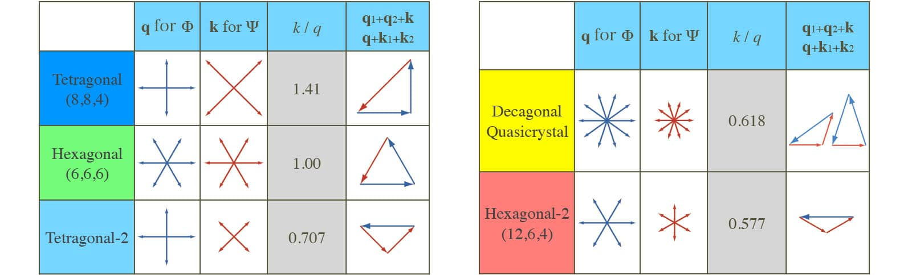

Dodecagonal quasicrystal in a polymeric alloy
Tomonari Dotera
Pilosophical Magazine 87, pp.3011-3019 (2007)
(Aperiodic 2006, 2006 Sept.)
Published on line 08 Dec., 2006
Small corrections have been found.
In Eq.(6), 1/6 should be 1/2.
In Eq.(7), 7/6 should be 4/3.
A simple Landau theory of three-component alloy systems under incompressible condition is investigated, which appears to give regions of the phase diagram in which Archimedean tiling phases are stable in two-dimensions. Moreover, we find regions where dodecagonal and decagonal quasicrystals appear to be stable. Alexander-MacTague and Mermin-Troian theories of weak crystallization are revisited.
Keywords: quasicrystals; polymers; phase stability, self-assembly; approximants; Archimedean tilings